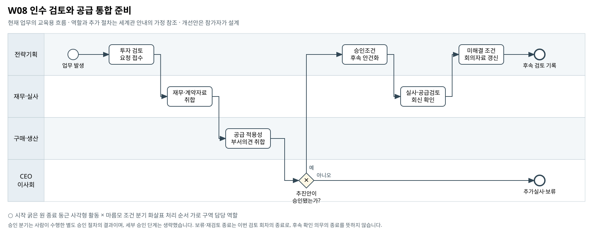

인수 검토와 공급 통합 준비
인수의 재무 논리와 원료 공급 개선 가능성을 함께 검토할 때 어떤 미확인 조건이 남아 있는가?
BPMN 2.0 편집 원본 · 도식 크게 보기 · 8개 도식집 PDF


승인 분기는 사람이 수행한 별도 승인 절차의 결과이며, 세부 승인 단계는 생략했습니다. 보류·재검토 종료는 이번 검토 회차의 종료로, 후속 확인 의무의 종료를 뜻하지 않습니다.
기존 자료의 단초
- Celtonic Labs 인수는 더마 활성원료 조달 다변화의 맥락에서 검토되고 있다.
- 인수 제안은 전체 가치 300억원, 1차 50% 취득 150억원 및 잔여 지분 콜옵션 구조를 제시한다.
- 반복 조정항목, 주요 고객 집중도와 계약 갱신, 실사 미확인 사항이 검토 쟁점이다.
- 투자 승인·300억원 배분의 최종 권한은 CEO/이사회다. Celtonic 원료를 Corevia의 승인된 대체재로 볼 증거는 없다.
주최 측의 교육용 업무 가정
- [교육용 가정] 전략이 실사자료를 모으고 재무와 구매·생산이 각각 의견을 작성한 뒤 이사회 판단을 받아 후속 검토를 관리하는 흐름이다.
- [교육용 가정] '추진안 승인'은 기재된 선행조건을 관리하며 후속 검토를 진행한다는 의미다. 도식에는 인수 대금 자동 집행이나 공급 통합 완료를 포함하지 않는다.
- [범위] 인수 찬반·적정가·통합 방식의 정답은 제공하지 않는다. 여기 나열한 보완 항목은 선택 예시다. 필수 확장과 다른 부서 영향의 기준은 A01을 따른다.
미해결 지점
- 대체 원료 규격·시험 결과·공급량·기술이전 필요성 등 적용성 자료가 없다.
- 인수 후 공급 계약·가격·리드타임·통합비용을 확인할 근거가 없다.
- 고객 계약 원문·갱신 결과·조건 충족 증빙과 의사결정 이력이 없다.
확장할 때 생각할 질문
- 재무적 투자 가치와 공급 개선 가설을 어떤 증거로 따로 검토할 것인가?
- 인수 전에 확인할 조건과 인수 후 검증할 조건을 어떻게 구분할 것인가?
- 추가 자료가 도착하면 어떤 기존 판단과 약속을 재검토해야 하는가?
보완할 수 있는 데이터
- 공급 적용성 검토 요청·시험 회신
- 조건부 승인 사항과 실사 질의·답변 이력
- 통합 범위·일정·비용 가정 및 공급 계약 초안
관련 원본 자료
- 00_common/Business_Process_Map.md
- 00_common/data_dictionary.md
- 00_common/approval_authority_policy.md
- 03_aurora_group/funding/grp_investment_proposal_celtonic.md
- 03_aurora_group/funding/grp_available_cash.md
- 03_aurora_group/approvals/board_minutes.md
- 03_aurora_group/strategy/strat_celtonic_adjustment_analysis.csv
- 04_celtonic_labs/financials/celtonic_quarterly_pl.csv
- 04_celtonic_labs/customers/celtonic_revenue_by_customer.csv
- 04_celtonic_labs/contracts/celtonic_contract_summary.md
- 04_celtonic_labs/docs/celtonic_management_interview.md
그림의 관계가 원본 파일의 모든 연결키 제공을 뜻하지는 않습니다. 원본에서 확인한 관계와 추가한 매핑·가정을 구분하십시오.